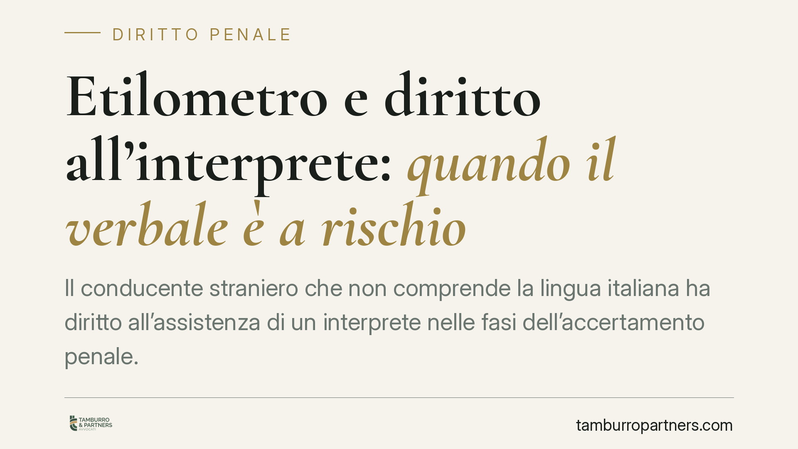

Etilometro e diritto all'interprete: quando il verbale è a rischio
Il conducente straniero che non comprende la lingua italiana ha diritto all'assistenza di un interprete nelle fasi dell'accertamento penale. Nell'ambito dei controlli con etilometro il tema è delicato: la giurisprudenza distingue tra atti di polizia su strada e atti del procedimento, con regimi di invalidità differenti. Vediamo cosa dice realmente il quadro normativo e quali profili meritano attenzione.

Il caso e perché se ne parla
Il tema torna ricorrente nelle aule penali: un conducente che non padroneggia l'italiano viene sottoposto ad alcoltest e, in sede di difesa, si contesta il mancato riconoscimento del diritto all'assistenza linguistica.
È importante una premessa di metodo. Circolano in rete sintesi che attribuiscono alla Cassazione pronunce dai numeri non verificabili o datate ad anni futuri, con tesi dai contorni netti ("nullità assoluta e insanabile"). Un contributo serio non può poggiare su citazioni non confermate. Preferiamo quindi ragionare sul quadro normativo stabile e sugli orientamenti effettivamente consolidati, senza attribuire a una singola pronuncia effetti che la disciplina non sostiene.
Inquadramento normativo
Il diritto all'interprete e alla traduzione degli atti nel procedimento penale trova fondamento in una cornice precisa:
- l'art. 111 della Costituzione, che garantisce il contraddittorio e l'assistenza di un interprete a chi non comprende la lingua del processo;
- l'art. 6 CEDU, sul giusto processo;
- la Direttiva 2010/64/UE, recepita in Italia con il d.lgs. 32/2014, che ha riformulato l'art. 143 c.p.p. sul diritto all'interpretazione e alla traduzione.
Va però collocata correttamente la fase. L'art. 186 del Codice della Strada disciplina la guida in stato di ebbrezza e il relativo accertamento strumentale. L'alcoltest effettuato su strada è un atto di polizia giudiziaria: in questa fase rilevano in particolare gli avvisi di garanzia e l'art. 354 c.p.p. sugli accertamenti urgenti, nonché il diritto a farsi assistere da un difensore (su cui si sono pronunciate anche le Sezioni Unite).
L'art. 143 c.p.p., invece, riguarda in senso proprio la traduzione degli atti del procedimento. Trasferirne meccanicamente la portata al momento del controllo stradale è una semplificazione fuorviante.
I regimi di invalidità non vanno confusi
La distinzione tecnica è decisiva, perché determina conseguenze diverse:
- la nullità assoluta (art. 179 c.p.p.) è insanabile e rilevabile in ogni stato e grado, ma è circoscritta a casi tassativi;
- la nullità a regime intermedio deve essere eccepita tempestivamente, altrimenti si sana;
- l'inutilizzabilità riguarda la prova acquisita in violazione di divieti di legge ed è categoria distinta dalla nullità dell'atto.
L'orientamento noto non qualifica l'omessa individuazione della lingua madre nell'alcoltest come automatica nullità assoluta e insanabile. Dove la carenza di assistenza linguistica incide, i profili tendono a collocarsi su un regime intermedio, con onere di tempestiva eccezione. Affermare il contrario significa sopravvalutare la portata difensiva di un singolo vizio.
Implicazioni pratiche
Per il conducente straniero il punto è concreto ma va dimensionato. La mancata assistenza linguistica, laddove abbia compromesso la comprensione degli avvisi e l'esercizio del diritto di difesa, può fondare un'eccezione in sede penale.
Due precisazioni sono doverose. Primo: il vizio, quando sussiste, va fatto valere nei tempi e nei modi previsti, perché un regime intermedio non è eccepibile in ogni momento. Secondo, e più importante: l'accoglimento di un'eccezione procedurale non equivale a un'assoluzione automatica. Ogni posizione dipende dalle circostanze concrete — tipo di accertamento, avvisi effettivamente resi, livello di comprensione del soggetto — e va valutata singolarmente.
Per le forze dell'ordine, l'indicazione di sistema è quella di documentare con cura la fase degli avvisi e dell'eventuale assistenza linguistica, riducendo così lo spazio per contestazioni successive.
Cosa fare in concreto
- È opportuno verificare, al momento del controllo, se gli avvisi di legge siano stati resi in forma comprensibile e se sia stata offerta assistenza linguistica.
- Conviene conservare copia del verbale e di ogni documento rilasciato in sede di accertamento.
- È utile annotare tempestivamente le circostanze del controllo, in particolare il livello di comprensione della lingua e la presenza o meno di un interprete.
- È preferibile sottoporre tempestivamente la posizione a valutazione tecnica, dato che eventuali eccezioni a regime intermedio hanno termini di decadenza.
- Prima di firmare atti, è prudente comprenderne il contenuto e, in caso di dubbio, farne richiesta di spiegazione.
Conclusione
Il diritto all'assistenza linguistica è una garanzia reale, ancorata alla Costituzione, alla CEDU e al diritto dell'Unione. Ma la sua traduzione processuale richiede precisione: la fase dell'atto, il regime di invalidità applicabile e la tempestività dell'eccezione fanno la differenza. Diffidare delle formule assolute è, qui, il primo atto difensivo.
---
*Contributo informativo a cura di Tamburro & Partners - Avv. Giuseppe Tamburro. Non costituisce parere legale.*
Ogni condominio ha una storia a sé.
Se gestisci un'amministrazione e vuoi un confronto su una specifica questione condominiale, scrivi allo studio. Ti rispondiamo entro un giorno lavorativo.